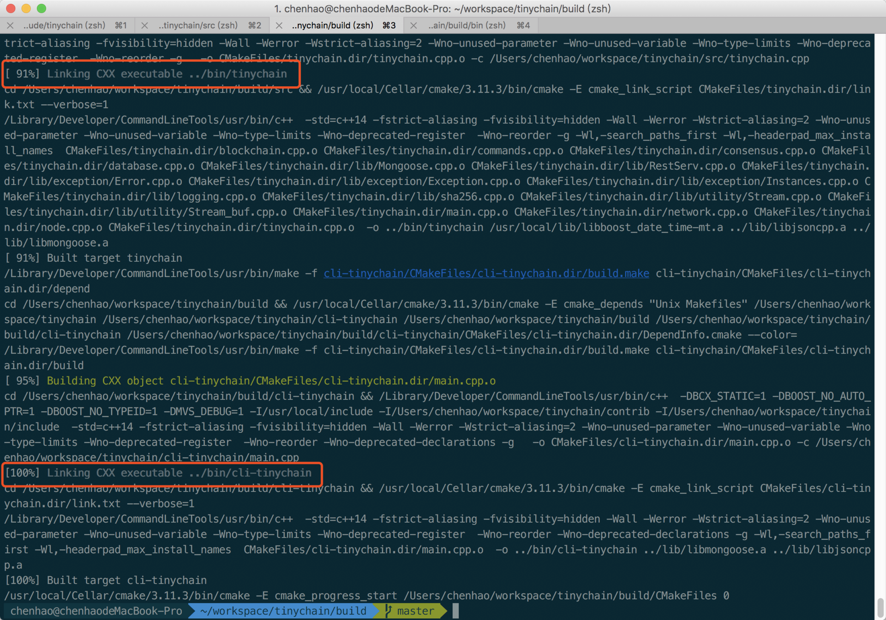
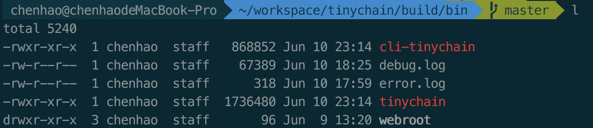
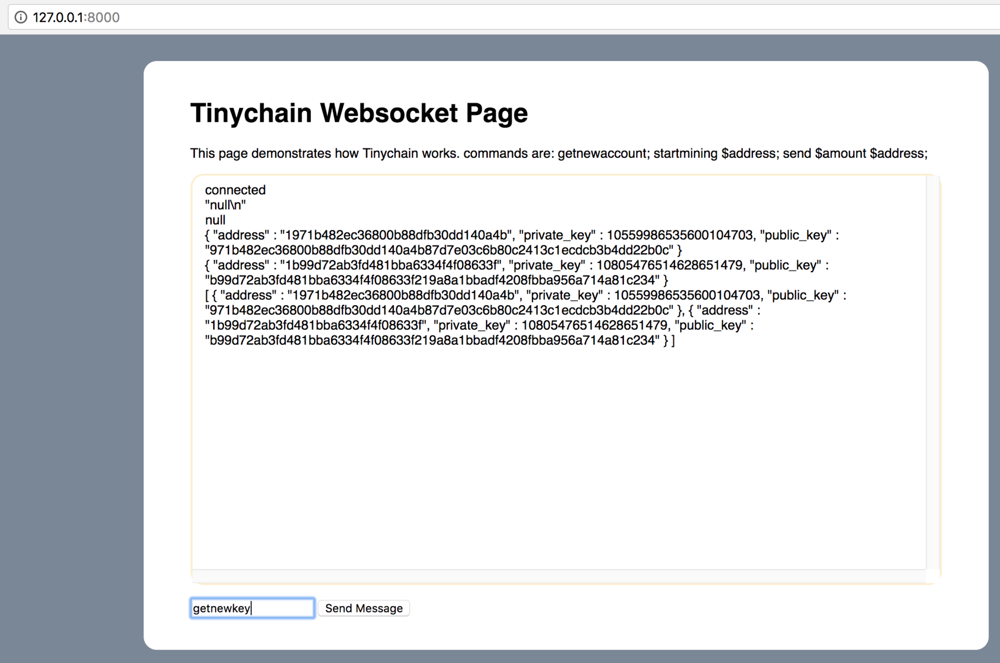
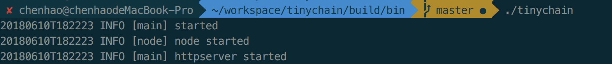
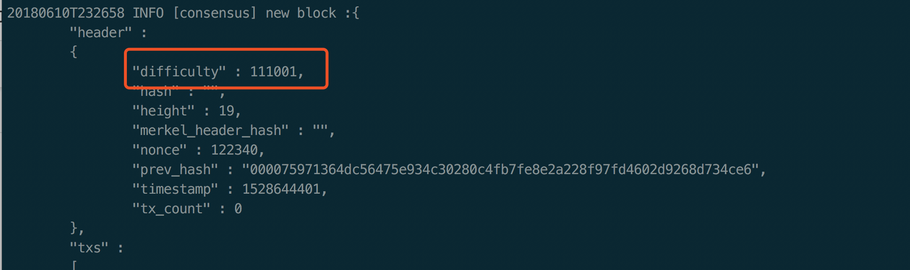
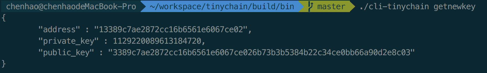
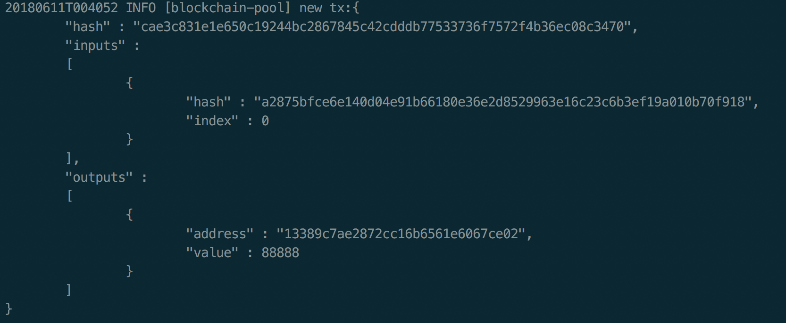
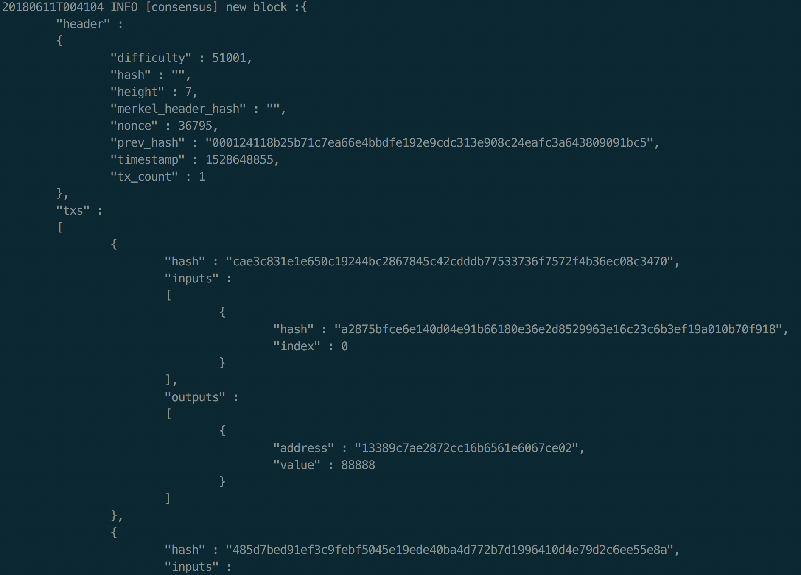

<!DOCTYPE html>
<html>
<head>
    <meta charset="UTF-8">
    <title>36_搭建你的迷你区块链（实践篇）</title>
    <link rel="stylesheet" href="../../css/bootstrap.min.css" type="text/css" />
    <script src="../../js/jquery-1.11.3.min.js" type="text/javascript"></script>
    <script src="../../js/bootstrap.min.js" type="text/javascript"></script>
    <script type="text/javascript">
        $(function() {
            var url = window.location.search;
            var andIndex = url.indexOf("&");
            var itcode = url.substring(8, andIndex);
            var lessonId = url.substring(andIndex+10);
            $.ajax({
                type: "GET",
                url: "/mobile/plugin/dch/smb/lesson/getUpdateChapter.jsp",
                data: {"jsonStr" : JSON.stringify({
                    "itcode" : itcode,
                    "lessonId" : lessonId,
                    "chapter" : document.title
                })},
                dataType: "json",
                success: function(data) {
                }
            });
        });
    </script>
</head>
<style type="text/css">
p {
    font-size: 300%;
    margin: 5% 5%;
}
li {
    margin: 0% 5%; 
    font-size: 275%;
}
h2 {
    margin: 0% 5%; 
    font-size: 300%;
    font-weight: bold;
}
h3 {
    margin: 0% 5%; 
    font-size: 280%;
    font-weight: bold;
}
pre {
  font-size: 200%;
  text-align: left;
}
table {
    font-size: 200%;
    text-align: center;
    table-layout: fixed;
}
th {
    text-align: center;
}
a {
    word-break: break-all;
}
</style>
<body id="body">
    <p style="text-align: center; font-weight: bold;">36 | 搭建你的迷你区块链（实践篇）</p>
    <p>上一篇文章中，我们介绍了实现一个迷你区块链的大致思路。今天，我们将通过代码编写，以及简单的功能测试，来完成我们的迷你区块链 Tinychain。</p>
    <p>除了正常的测试案例之外，我们还可以构造一些极端测试案例，来观察 Tinychain 的分叉合并，挖矿难度调整等情况。</p>
    <h2 id="-">代码编写</h2>
    <p>通过前文的分析，我们已经了解到了实践一个迷你区块链的大致思路。接下来，我将从顶层到底层来搭建区块链。</p>
    <h3 id="-1-server">代码编写 1 Server</h3>
    <p>从链的顶层设计来看，我们需要一个入口，那么我们就从入口开始：我需要先为整个服务做一些基础设置，最后再来 Server.run()。</p>
    <p>所以，我们的代码大概是这样子的。</p>
    <pre>
        // server setup
        node my_node;
        mgbubble::RestServ Server{"webroot", my_node};
        auto&amp; conn = Server.bind("0.0.0.0:8000");
        mg_set_protocol_http_websocket(&amp;conn);
        log::info("main")&lt;&lt;"httpserver started";
        Server.run();
    </pre><p>我们首先生成一个 node 实例，然后被 Server装载进去，最后设置好 Server 启动。</p><!-- [[[read_end]]] -->
    <p>这个 Server 主要有两个功用，第一是向本地用户服务，也就是接受命令行，接受本地 RPC 调用；第二是接受外部网络传送进来是的新交易，和新的区块。所以 Server 是整个节点的入口。</p>
    <h3 id="-2-node">代码编写 2 node</h3>
    <p>那么这里的 node 其实就是区块链的 node，里面包含了区块链的基本设置，这些一般都是硬编码在代码中的，例如一般区块链都有个“魔法数”，实际上就是区块链 ID，这个 ID 会被放在所有消息的开头，如果区块链 ID 不匹配，则抛弃接收到的消息。</p>
    <p>这里的区块链 ID 我们设置在这里。</p>
    <pre>
    blockchain(uint16_t id = 3721):id_(id) {
        id_ = id;
        create_genesis_block();
    }
</pre><p>代码中所展示的 id_ 就是区块链 ID，在 Tinychain 的案例中，我也是硬编码的。</p>
<p>在一个 node 当中，至少要包含 network、blockchain、miner 三个模块。</p>
<pre>
    public:
    void miner_run(address_t address);
    blockchain&amp; chain() { return blockchain_; }
    network&amp; p2p() { return network_; }
</pre><pre>
    private:
    network network_;
    blockchain blockchain_;
    miner miner_{blockchain_};
</pre><p>network 也就是 P2P 网络类，blockchain 是区块链的核心类，miner 是共识模块下的核心类，三者被聚合到 node 中。</p>
<p>同时，node 也会提供一些 blockchain 和 miner 的接口，方便 Server 层调用。</p>
<h3 id="-3-blockchain">代码编写 3 blockchain</h3>
<p>一个 blockchain 实例，应当包含下面的内容。</p>
<pre>
    uint16_t id_;
    block genesis_block_;
    chain_database chain_;
    key_pair_database key_pair_database_;
    memory_pool_t pool_;
</pre><p>genesis<em>block</em> 就是创世区块，这个是预先生成好的。genesis_block 的信息也是被硬编码在代码中，我在 Tinychain 的例子为了方便测试，每个 genesis_block 都是可以自行生成的。</p>
<p>chain<em>database chain</em> 是相对于 memory<em>pool 而言的，chain</em>就是已经经过确认，并且在本地持久化存储的区块数据（由于时间有限，Tinychain 的案例中还未实现持久化存储，可以后续升级替换）。</p>
<p>memory_pool 是指还未经过确认，暂时驻留在内存中的交易池，交易池中的交易会在挖矿时，被导入到新的区块中。</p>
<pre>
    // 装载交易
    new_block.setup(pool);
</pre><p>这里的 pool 就是交易池。</p>
<p>key_pair_database 是指专门存储用户的私钥的数据库，同时提供私钥管理。</p>
<p>同时 blockchain 也负责统一对外提供上述功能的接口。</p>
<pre>
    // 获取当前节点高度
    uint64_t height() { return chain_.height(); }
    // 获取当前节点最新区块
    block get_last_block();
    // 查询指定区块
    bool get_block(sha256_t block_hash, block&amp; out);
    // 查询指定交易
    bool get_tx(sha256_t tx_hash, tx&amp; out);
    // 查询目标地址的余额
    bool get_balance(address_t address, uint64_t balance);
    // 获取当前区块链的 ID
    auto id() {return id_;}
    // 获得交易池数据
    memory_pool_t pool() { return pool_; }
    // 区块打包成功以后，用于清空交易池
    void pool_reset() { pool_.clear(); }
    // 从网络中收集未确认的交易到交易池
    void collect(tx&amp; tx) {
    pool_.push_back(tx);
}

void merge_replace(block_list_t&amp; block_list)；
</pre><p>除了上述接口之外，blockchain 还负责当发现自己处于较短的分叉链上时，自动合并到最长链。</p>
<h3 id="-4-network">代码编写 4 network</h3>
<p>在 network 中，可用的地址簿代表了可用的其他对等节点，至少是连接过成功一次的。</p>
<pre>
    public:
    void broadcast(const block&amp; block);
    void broadcast(const tx&amp; transaction); 
    void process(event_t ev, func_t f);
</pre><pre>
    private:
    endpoint_book_t book_;
    channels_t channels_;
</pre><p>地址簿会随着网络的变化进行更新，实时状态的地址簿是驻留在内存中的，当节点关闭是，会被刷到持久化存储中。</p>
<p>channels 代表了已经激活的连接，这些连接可以被 broadcast 接口使用，当本地节点产生新的区块和交易时，会调起这些 channels。</p>
<p>当 P2P 网络产生了新的事件时，会通过 process 接口处理新到达的交易和区块，这一事件会传导给 blockchain 模块。</p>
<h3 id="-5-consensus">代码编写 5 consensus</h3>
<p>consensus 的含义为共识，共识会在两种情况下产生，第一是对本地生产的交易进行验证，第二是外来的区块和交易进行验证。</p>
<p>无论是哪种情况，他们遵循的验证规则是一样的。validate_tx 和 validate_block 分别承担了这样的功能。</p>
<pre>
    bool validate_tx(const tx&amp; new_tx) ;

    bool validate_block(const tx&amp; new_block) ;
</pre><p>除了验证区块之外，还涉及到提供基础挖矿设施。我们知道挖矿分为两种，一种叫做 solo 挖矿，另外一种叫做联合挖矿。其实无论哪种挖矿类型，都必须用到 miner 类。</p>
<pre>
    public:
    // 开始挖矿
    void start(address_t&amp; addr);
    inline bool pow_once(block&amp; new_block, address_t&amp; addr);
    // 填写自己奖励——coinbase
    tx create_coinbase_tx(address_t&amp; addr);

    private:
    blockchain&amp; chain_;
</pre><p>miner 类展示了在 solo 挖矿情况下，支持开始挖矿以及计算自己的 coinbase 的过程。</p>
<p>实际 pow_once 的挖矿代码如下，pow_once 被 start 调用，start 里面是一个死循环，死循环里面包了 pow_once 函数。</p>
<pre>
bool miner::pow_once(block&amp; new_block, address_t&amp; addr) {

auto&amp;&amp; pool = chain_.pool();

auto&amp;&amp; prev_block = chain_.get_last_block();

// 填充新块
new_block.header_.height = prev_block.header_.height + 1;
new_block.header_.prev_hash = prev_block.header_.hash;

new_block.header_.timestamp = get_now_timestamp();

new_block.header_.tx_count = pool.size();

// 难度调整:
// 控制每块速度，控制最快速度，大约 10 秒
uint64_t time_peroid = new_block.header_.timestamp - prev_block.header_.timestamp;
//log::info("consensus") &lt;&lt; "target:" &lt;&lt; ncan;

if (time_peroid &lt;= 10u) {
new_block.header_.difficulty = prev_block.header_.difficulty + 9000;
} else {
new_block.header_.difficulty = prev_block.header_.difficulty - 3000;
}
// 计算挖矿目标值, 最大值除以难度就目标值
uint64_t target = 0xffffffffffffffff / prev_block.header_.difficulty;

// 设置 coinbase 交易
auto&amp;&amp; tx = create_coinbase_tx(addr);
pool.push_back(tx);

// 装载交易
new_block.setup(pool);
// 计算目标值
for ( uint64_t n = 0; ; ++n) {
// 尝试候选目标值
new_block.header_.nonce = n;
auto&amp;&amp; jv_block = new_block.to_json();
auto&amp;&amp; can = to_sha256(jv_block);
uint64_t ncan = std::stoull(can.substr(0, 16), 0, 16); // 截断前 16 位，转换 uint64 后进行比较

// 找到了
if (ncan &lt; target) {
//log::info("consensus") &lt;&lt; "target:" &lt;&lt; ncan;
//log::info("consensus") &lt;&lt; "hash  :" &lt;&lt; to_sha256(jv_block);
new_block.header_.hash = can;
log::info("consensus") &lt;&lt; "new block :" &lt;&lt; jv_block.toStyledString();
log::info("consensus") &lt;&lt; "new block :" &lt;&lt; can;
return true;
}
}
</pre><p>上面的代码从一开始到 for 循环之前，都可以提取出来，做成叫做 getblocktemplate 的接口，getblocktemplate 是一种 JSON-RPC 调用。</p>
<p>通过这个调用，就可以把挖矿的状态信息分享给其他矿机，矿机拿到 blocktemplate 以后直接进行 nonce 部分暴力搜索即可。</p>
<h3 id="-6-database">代码编写 6 database</h3>
<p>database 是偏底层的接口，主要的功能有两个，第一是提供区块和私钥的持久化存储，第二是提供交易和区块的查询接口。</p>
<p>上文 blockchain 中的 blockchain_database 和 keypair_database 都是从 database 派生过来的。</p>
<pre>
    key_pair_database

    // 相当于是本地钱包的私钥管理
    class key_pair_database
    {
        public:
        key_pair get_new_key_pair()；
        const key_pair_database_t&amp; list_keys() const；
        private:
        key_pair_database_t key_pair_database_;
    };


    blockchain_database

    public:
    uint64_t height();

    auto get_last_block();

    bool get_block (const sha256_t block_hash, block&amp; b);

    bool get_tx (const sha256_t tx_hash, tx&amp; t);

    bool push_block (const block&amp; b);

    bool pop_block (cconst sha256_t block_hash);

    private:
    chain_database_t chain_database_;
</pre><h3 id="-7-commands">代码编写 7 commands</h3>
<p>commands 提供了开发者命令行交互接口。</p>
<pre>
    bool exec(Json::Value&amp; out);

    static const vargv_t commands_list;

    private:
    vargv_t vargv_;
    node&amp; node_;
</pre><p>首先得有一个可识别的命令列表，接着是执行接口，例如命令行发起生成新 key_pair 的过程，执行 getnewkey 命令。</p>
<p>先被 command 解析，接着执行 exec，执行的时候需要用到 node 对象。</p>
<p>实际上 command 类比较繁琐，因为一个功能复杂的钱包，维护的命令和种类可能多达几十种。</p>
<p>同时命令又可以被 JSON-RPC 调用，所以一般命令行客户端本身就是一个轻量级的 http-client。</p>
<pre>
    std::string url{"127.0.0.1:8000/rpc"};
    // HTTP request call commands
    HttpReq req(url, 3000, reply_handler(my_impl));
</pre><h3 id="-8-">代码编写 8  基础类</h3>
<p>基础类是实际生成公私钥对、构建交易 tx 的基本单元类，构建区块的基本单元类。</p>
<pre>
    key_pair:
    class key_pair
    {
        public:
        key_pair()  {
        private_key_ = RSA::new_key();
        public_key_ = private_key_.public_key();
    }

    address_t address()；
    sha256_t public_key() const；
    uint64_t private_key() const；

    // ... 一些序列化接口 (tinychain 中是 Json)
    private:
    private_key_t private_key_;
    public_key_t public_key_;

    tx:
    public:
    input_t inputs() const { return inputs_; }
    output_t outputs() const { return outputs_; }
    sha256_t hash() const { return hash_; }

    private:
    input_t inputs_;
    output_t outputs_;
    sha256_t hash_;

    block:
    class block
    {
        public:
        typedef std::vector&lt;tx&gt; tx_list_t;

        struct blockheader {
        uint64_t nonce{0};
        uint64_t height{0};
        uint64_t timestamp{0};
        uint64_t tx_count{0};
        uint64_t difficulty{0};
        sha256_t hash;
        sha256_t merkel_root_hash; //TODO
        sha256_t prev_hash;

    };
    // ... 一些其他接口和序列化函数
    std::string to_string() {
    auto&amp;&amp; j = to_json();
    return j.toStyledString();
}

sha256_t hash() const { return header_.hash; }

void setup(tx_list_t&amp; txs) {tx_list_.swap(txs);}

private:
blockheader header_;
tx_list_t tx_list_;
</pre><h2 id="-">首次运行</h2>
<p>我们编写完基础类和基本结构的代码之后，就可以运行试一试。</p>
<p>编译成功是这样子的。</p>
<p></p>
<p>我们可以看到有 Tinychain 和 Cli-tinychain。</p>
<p></p>
<p>Tnychain 就是我们的核心程序，cli-tinychain 就是我们的命令行客户端。</p>
<p>实际上我在 Server 里还嵌入了一个可视化的 Websocket 界面。</p>
<p></p>
<p>只需要在 Tinychain 可执行文件同目录底下创建 webroot 文件夹，将 etc 底下的 index 放入 webroot 下，接着打开浏览器 127.0.0.1:8000 就可以看到了。</p>
<p>实际上这个页面我想做成区块的监视页面，只是还没改造完成，目前支持发送命令。</p>
<p>我们开始首次运行 Tinychain。</p>
<p></p>
<p>运行后，等 node 和 server 全部 started，就可以开始操作命令行了。</p>
<p>也可以通过日志进行监视，但是需要在代码处详细打桩，这次我偷懒了，没有好好打，所以不多，直接查看同目录下 debug.log 和 error.log 即可。</p>
<h2 id="-">首次挖矿</h2>
<p>我们通过./tinychain 启动之后，开始第一次挖矿。</p>
<pre>
 ✘ chenhao@chenhaodeMacBook-Pro  ~/workspace/tinychain/build/bin   master  ./tinychain
    20180610T232347 INFO [main] started
    20180610T232347 INFO [node] node started
    20180610T232347 INFO [main] httpserver started
    20180610T232356 INFO [consensus] new block :{
    "header" :
    {
      "difficulty" : 9001,
      "hash" : "",
      "height" : 1,
      "merkel_header_hash" : "",
      "nonce" : 0,
      "prev_hash" : "00b586611d6f2580e1ea0773ec8b684dc4acf231710519e6272ed7d0c61ed43e",
      "timestamp" : 1528644236,
      "tx_count" : 0
  },
  "txs" :
  [
  {
     "hash" : "cddf6e838eff470d81155cb4c26fd3a7615b94a00e82f99b1fd9f583d7bc0659",
     "inputs" :
     [
     {
       "hash" : "00000000000000000000000000000000",
       "index" : 0
   }
   ],
   "outputs" :
   [
   {
       "address" : "122b03d11a622ac3384904948c4d808",
       "value" : 1000
   }
   ]
}
]
}

20180610T232356 INFO [consensus] new block :0de5c36420aab2f7fc9413cfbd21bece697a349106771dc58b25a6a099d6aa86
20180610T232357 INFO [consensus] new block :{
"header" :
{
  "difficulty" : 18001,
  "hash" : "",
  "height" : 2,
  "merkel_header_hash" : "",
  "nonce" : 6048,
  "prev_hash" : "0de5c36420aab2f7fc9413cfbd21bece697a349106771dc58b25a6a099d6aa86",
  "timestamp" : 1528644236,
  "tx_count" : 0
},
"txs" :
[
{
 "hash" : "cddf6e838eff470d81155cb4c26fd3a7615b94a00e82f99b1fd9f583d7bc0659",
 "inputs" :
 [
 {
   "hash" : "00000000000000000000000000000000",
   "index" : 0
}
],
"outputs" :
[
{
   "address" : "122b03d11a622ac3384904948c4d808",
   "value" : 1000
}
]
}
]
}
</pre><p>刚开始挖矿会比较快，随着难度提升，会趋向于稳定到 10 秒种左右一个块，如果长时间不出块，难度会自动降下来。曾经元界的代码在难度调整上有缺陷，遭受了严重的“难度坠落”攻击。</p>
<p>我们可以通过这个位置观察难度调整的情况。
    </p>
    <h2 id="-">第一笔交易</h2>
    <p>我们保持挖矿，接下来发送一笔交易。
    我们先通过 getnewkey 命令获得一个新公私钥对以及对应的地址。</p>
    <p></p>
    <p>接着发送第一笔交易。</p>
    <p></p>
    <p>探测到接下来被打包到区块中。</p>
    <p></p>
    <h2 id="-">分叉与合并</h2>
    <p>区块链分叉是数据全网不一致的表现，通常是矿工节点行为不一致导致的，常见的有网络分区和协议不兼容，如果同时产生，那么必然会出现两条比较长的分叉链。</p>
    <p>在现实情况中，分叉 1 个是最常见的，2 个已经非常罕见了，3 个以上基本是网络分区造成的。</p>
    <p>如果我们要在 Tinychain 中实践网络分区和分叉，我们需要构建局域网多节点私链环境，可以通过 docker 来试验。</p>
    <p>通过本文，你可以看到即使是搭建一个迷你区块链，它的工作量也是巨大的，其中不仅仅只是组合几个基础组件那么简单，还要涉及各个模块的设计和交互等详细的工作。</p>
    <p>由于在短时间内全部搭建以及实现 Tinychain 所有功能是不可行的，在这里，我只为你提供了一些实践的思路。</p>
    <p>目前 Tinychain 缺失了 P2P 网络实现、RSA 公私钥对集成、共识模块的交易和区块的验证等内容，我会在后续逐渐完善，你也可以跟我一起补充。</p>
    <h2 id="-">总结</h2>
    <p>好了，通过今天的代码实践，我们实现了迷你区块链 Tinychain，并且，通过运行与测试 Tinychain，我们了解到了一个最简单区块链的运行原理，希望通过今天的文章，可以帮你加深对区块链技术的理解。</p>
    <p>区块链技术只是作为基础设施，服务于广大的开发者和业务需求。目前区块链的发展远远不止 Tinychain 中所展现的样子，我们还需要去考虑区块链 2.0 智能合约，如何设计 Token 经济等一些问题。</p>
    <p>随着区块链的发展和应用规模，区块链安全问题也日益突出，所以今天的问题是，如果要攻击 Tinychain，可以采取什么手段呢？</p>
</body>
</html>